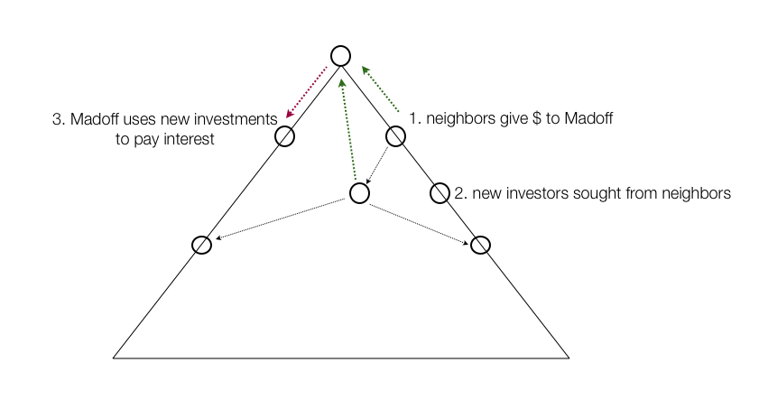
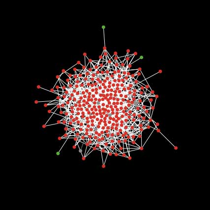
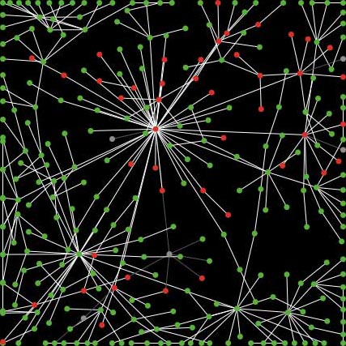
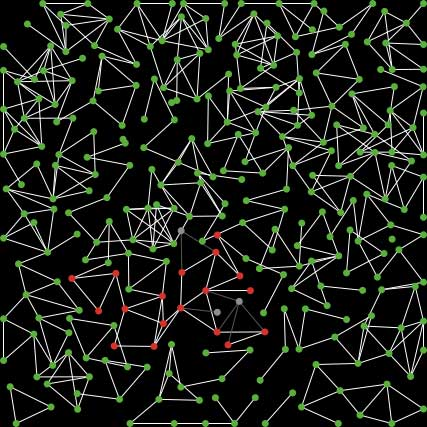
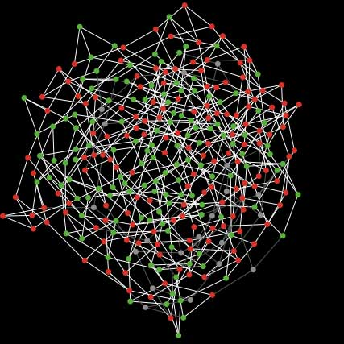
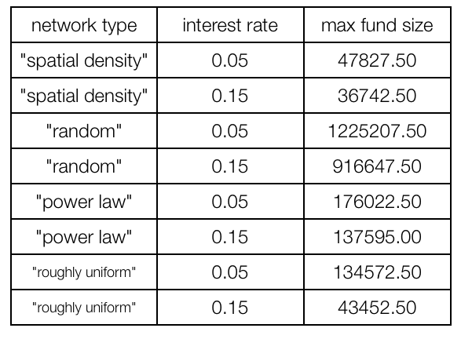
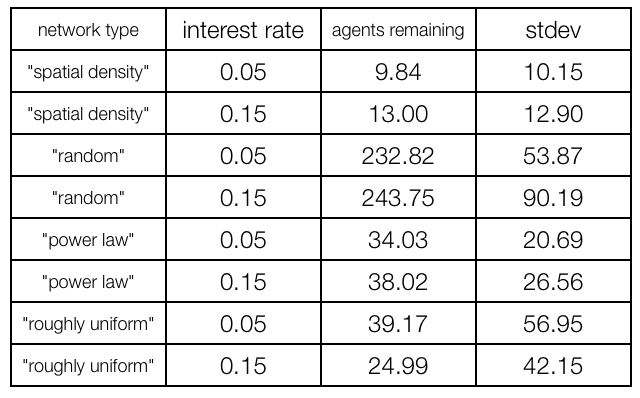

How to make crime pay? A primer for Ponzi copycats.
1. Introduction
The Ponzi scheme takes the following form:
Ponzi starts the scheme by “infecting” his immediate neighbors in the network. They invest a certain amount of money in his fund, for which he promises them a fixed interest rate every period. Ponzi does not invest the money and does not earn any return on them. With a finite number of investors, the fund is doomed to collapse.
Ponzi scheme

We take the perspective of a Ponzi schemer and model her problem of choosing a type of social network in which to position herself. The underlying idea is that the Ponzi schemer faces a tradeoff between the profitability and the sustainability of the fund.
Model and Questions Addressed
We model the effect of social network structure on the duration and maximal volume of a Ponzi fund. We thereby compare four different network structures – a random network, a regular network, a power law network, and a spacial density network.
We ask the following questions:
How does deterrence change with different model parameters?
How sensitive are model outputs?
What is the effect of different returns offered by Ponzi on the maximum fund size reached, the number of agents who have invested, and the duration of the scheme until the fund reaches its maximal size?
2. Key Assumptions
Our key assumptions are the following:
2.1. There are a fixed number of agents in the network.
2.2. Only direct neighbors are infected (at t = 0, Ponzi is infected).
2.3. Agents invest when the number of neighbors infected is higher than a threshold level.
2.4. The fund pays an interest rate to investors every period.
2.5. Investors withdraw the money invested with a random probability or when the number of neighbors, who have withdrawn is higher than the withdrawal threshold level.
2.6. The scheme ends when the fund goes to 0.
2.7. There is no reinvestment.
2.8. Ponzi's utility is proportional to the max amount of $ in his fund (he cares about getting as much money as possible and then running away with it). On the other hand, he also takes the threat of punishment into account. His expected jail time depends on the net number of defrauded (i.e. those who have invested and have not withdrawn their money). So he faces a tradeoff between profitability and risk of punishment.
3. Key Results with four types of networks
3.1. Random network

3.2. Power law

3.3. Spacial graph

3.4. Uniform graph

4. Comparison of the results
We look at the effect of the network structure on maximal fund size reached, on scheme duration, and on the number of agents remaining (i.e. who have not withdrawn their money) when the fund collapses. The latter can serve as an indicator of expected jail time for Ponzi.
4.1. Effect of network type on maximal fund size
We find that the fund size reached during the lifetime of the fund is maximal under a random network, which is consistent with the intuition that under this type of network structure communication between agents is least restricted. The maximal fund size reached is smallest with a spatial density network structure. An interesting result is that when we run our simulations in a roughly uniform network with a high interest rate the maximal fund size reached is much lower than the maximal fund size reached with the low interest rate in the same network structure.

4.2. Effect of network structure on scheme duration
We find that all network structures perform similarly in terms of scheme duration. The one that has the lowest variance is the random network.
4.3. Effect of network structure on net number of defrauded agents
The number of agents remaining, i.e. those who have not withdrawn their money at the time the fund collapses, is highest under the random network structure and lowest under the spatial density network. Assuming that the number of agents defrauded matters for expected jail time if Ponzi gets arrested, his safer option in case he is more risk averse is to choose a spatial density network.

5. The Applet for the simulations
6. Future Directions
Future work can focus on the following extensions of our model:
1) endogeneize the choice of the interest rate that Ponzi offers, so as to maximize his utility.
2) look at policy implications for fraud deterrence agencies.
3) model learning in the network – i.e. discovery of the fraud on part of the investors and its implications.
4) look at the case of multiple Ponzis in the network – either cooperating or competing.
7. Applications/ Social science scenarios
Scenarios that can be to some extent be viewed as a Ponzi scheme include pension funds, which are funded through a pay-as-you-go mechanism. The difference is that in these systems there is no Ponzi agent committing fraud and benefitting from them and the sustainability depends on the demographics (age structure) of the population.
The use of some natural resources can also be compared to a Ponzi scheme.
Trend/ information diffusions also occur by direct activation in social networks, but they do not end when the fund level is < 0.
Diseases follow a similar spread mechanisms, but there is no Ponzi beneficiary from the disease spread and they do not end when the fund level is < 0.
8. Conclusion
We modelled the diffusion of a Ponzi scheme in four different network structures - a random network, a spatial density, a power law, and a roughly uniform network. We found that incentives for the Ponzi schemer are influenced by network structure. Assuming that the Ponzi schemer cares about increasing profitability and avoiding punishment, she will make her decision on where to position herself, depending on the weight she gives to these to factors.